" 식단관리, 왜 이렇게 어려울까요? "
당신의 끼니 서포터
Mealporter
어제 저녁엔 무엇을 드셨나요?
단백질은 몇 g이었나요?
지방은 몇 퍼센트 였나요?
나트륨은 몇 g이었나요?
총 몇 g드셨나요?
칼로리는 몇 kcal였나요?
탄수화물 함량은 몇 퍼센트였나요?
Research
사람들은 식단관리에 대해
어떻게 생각하고 있을까요?
식단 관리란 앞서 언급한 요소 뿐만 아니라
다양한 부분을 고려해야 하는 활동입니다.
바쁜 현대인들이 이러한 요소들을
일일이 직접 챙기기란 쉽지 않은 일인데요.
실제로 식단관리에 대해
어떤 경험과 생각을 가지고 있는지,
어떤 부분에서 도움을 필요로 하는지
알아보고자 MZ세대 230여명에게 물어봤습니다.
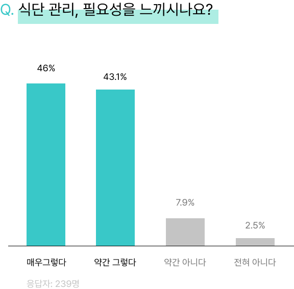
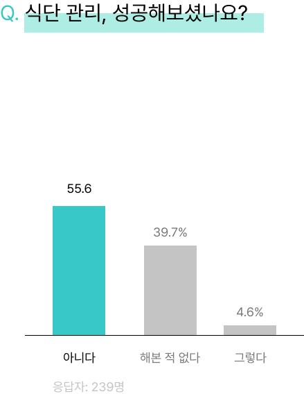
Solution
저희는 이러한 불편을 해결하기 위해 AI 식습관 개선 서비스 밀포터를 제안합니다.
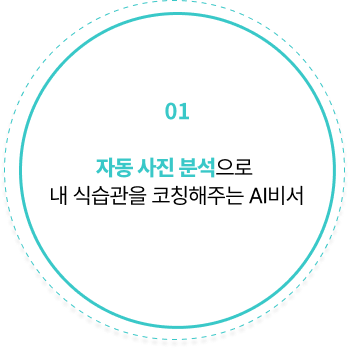
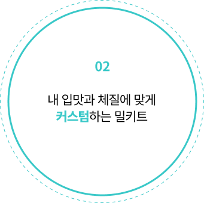
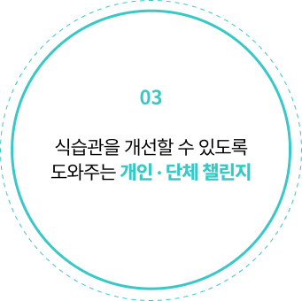
밀포터는 꾸준한 식습관 변화와 식단 관리를 위해
식단 기록의 과정을 간편화하고 데이터를 통해 사용자 맞춤 컨텐츠를 제공합니다.
식단 기록의 과정을 간편화하고 데이터를 통해 사용자 맞춤 컨텐츠를 제공합니다.
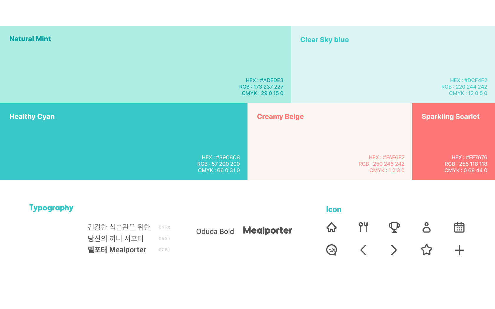
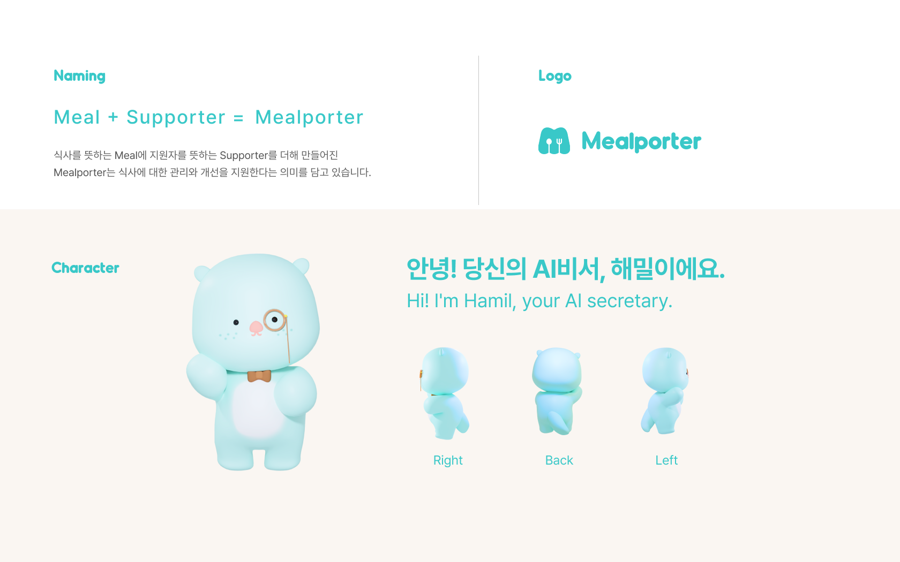
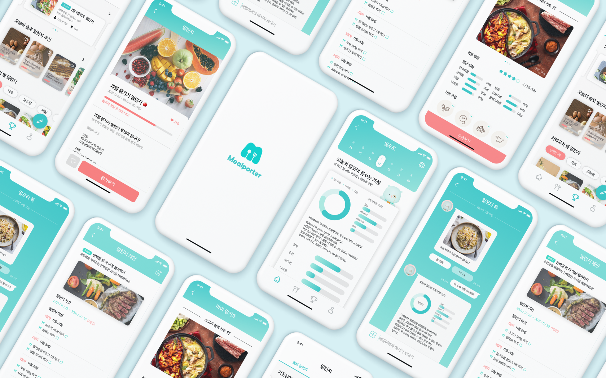
Labeling test
몇 가지 질문을 통해 평소의 식습관과 체질, 취향 등의 정보를 수집하여
총 6가지 유형 중 하나의 결과를 받아 나만의 프로필을 제작할 수 있습니다.
총 6가지 유형 중 하나의 결과를 받아 나만의 프로필을 제작할 수 있습니다.
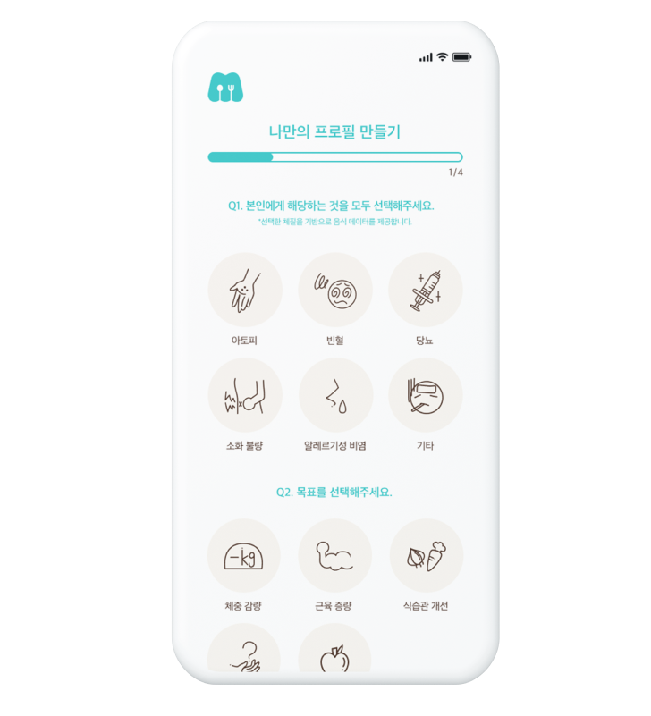
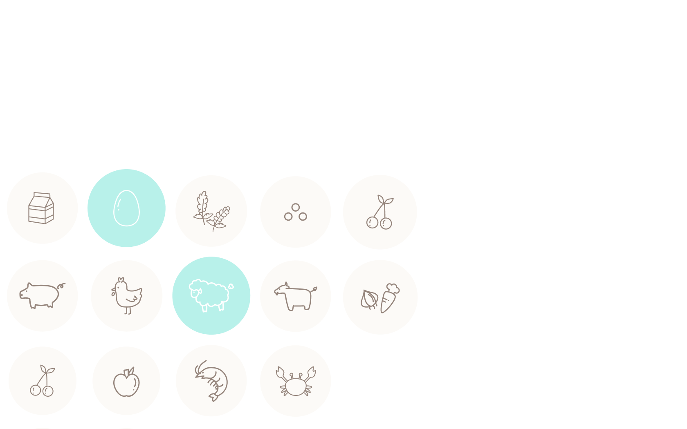
Mealporter Profile
레이블링 테스트 결과를 취합하여 만든 프로필을 통해 AI비서 해밀이
밀포트, 밀키트, 밀린지 등의 컨텐츠에서 맞춤형 정보를 제공합니다.
밀포트, 밀키트, 밀린지 등의 컨텐츠에서 맞춤형 정보를 제공합니다.
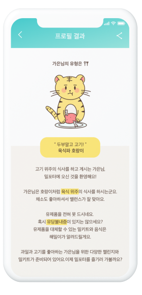

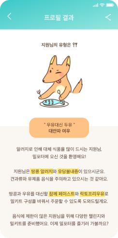
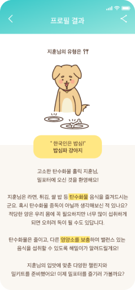
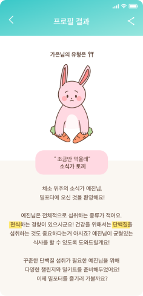
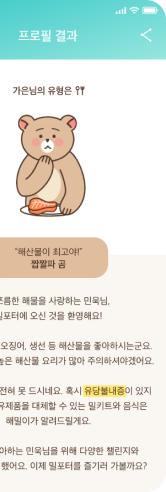
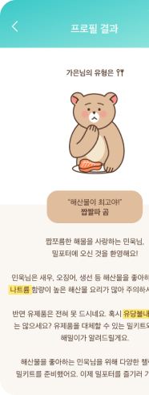
Main page
메인 화면에서는 오늘의 밀포트와 작성한 밀피드 개수,
커스텀 했던 마이 밀키트에 대한 정보를 한 눈에 확인할 수 있습니다.
커스텀 했던 마이 밀키트에 대한 정보를 한 눈에 확인할 수 있습니다.
Mealporter talk
AI비서 해밀이는 수집된 정보를 기반으로 식단, 식습관, 대체 식품 정보
제공 뿐만 아니라 밀포트 도착 알림, 밀키트 배송정보까지 알려드립니다.
계정을 연동하면 SNS에 올린 사진을 바로 피드에 입력할 수 있습니다.
제공 뿐만 아니라 밀포트 도착 알림, 밀키트 배송정보까지 알려드립니다.
계정을 연동하면 SNS에 올린 사진을 바로 피드에 입력할 수 있습니다.
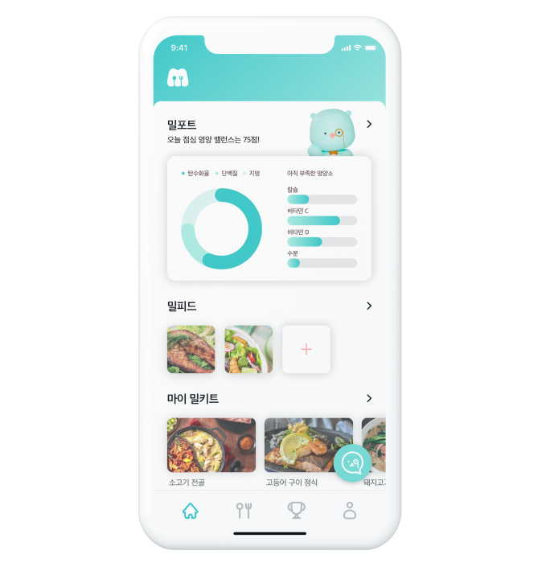
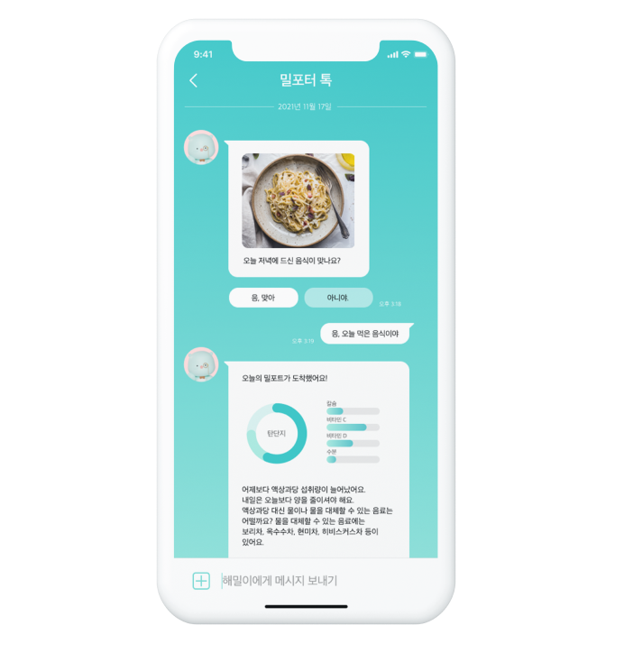
Mealport
사용자가 업로드한 사진을 AI비서가 분석하여 리포트를 제공합니다.
빠르고 정확한 분석을 통해 대체 음식 및 몸에 필요한 영양소 등을 확인할 수 있습니다.
빠르고 정확한 분석을 통해 대체 음식 및 몸에 필요한 영양소 등을 확인할 수 있습니다.
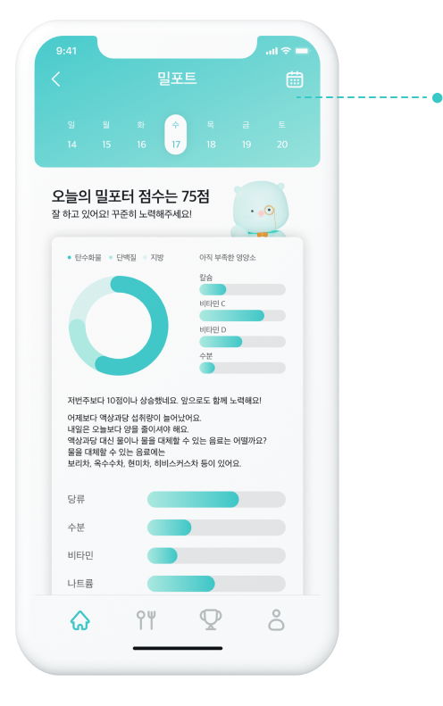
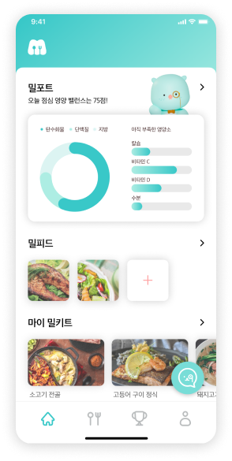
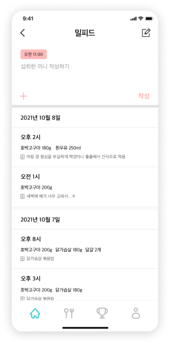
Mealenge
식습관을 습관화할 수 있는 챌린지에 도전해 보세요.
직접 챌린지를 제작할 수도 있고 여러 사람과 함께하여
나의 순위를 확인해볼 수도 있습니다.
기록을 달성해서 뱃지를 모아 밀키트 쿠폰도 받아보세요.
직접 챌린지를 제작할 수도 있고 여러 사람과 함께하여
나의 순위를 확인해볼 수도 있습니다.
기록을 달성해서 뱃지를 모아 밀키트 쿠폰도 받아보세요.
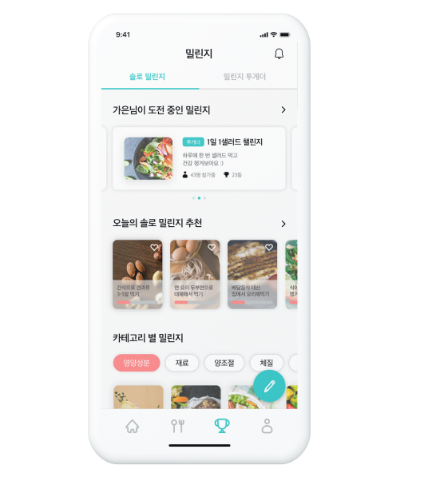
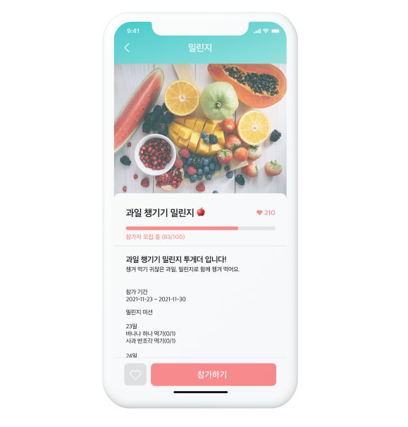
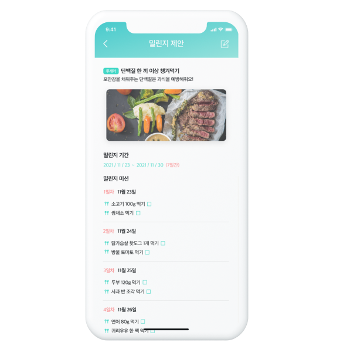
Mealkit
수집된 정보와 코칭을 기반으로 밀키트를 추천받고 직접 커스텀 해보세요.
커스텀 된 밀키트는 저장했다가 원할 때 언제든 주문할 수 있습니다.
커스텀 된 밀키트는 저장했다가 원할 때 언제든 주문할 수 있습니다.
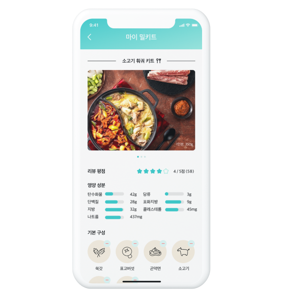
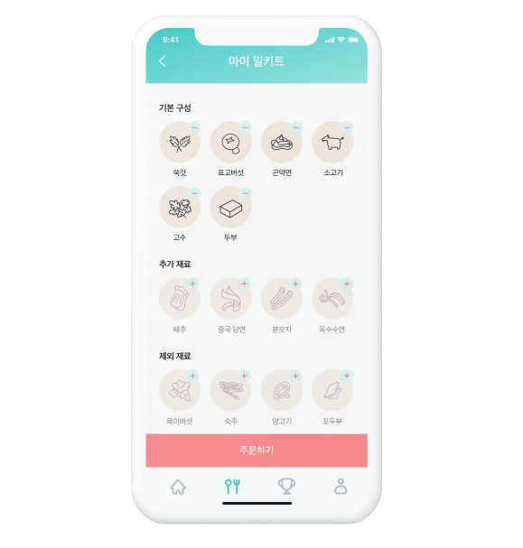
My page
마이페이지에서는 만들어진 프로필을 비롯해 밀린지, 밀키트,
수집한 뱃지 등의 정보를 한번에 확인할 수 있습니다.
수집한 뱃지 등의 정보를 한번에 확인할 수 있습니다.

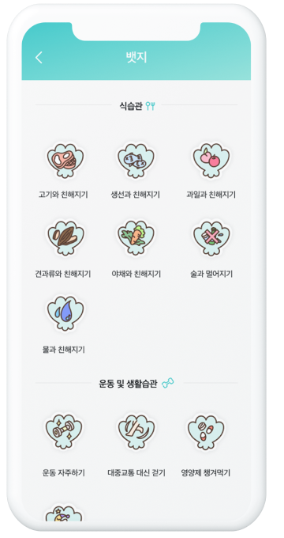